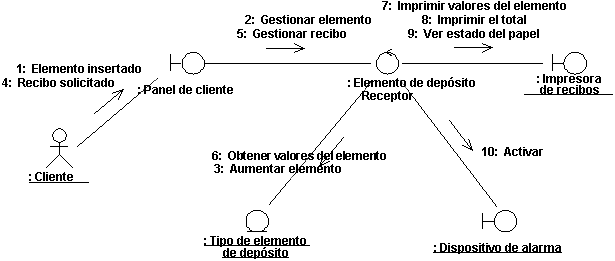
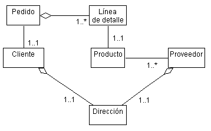

|
Crear una realización de caso de uso de análisis
|
Objetivo
|
Crear el elemento de modelado que se utiliza para expresar el comportamiento del caso de uso .
|
Los casos de uso constituyen la base de gran parte del primer trabajo de análisis y diseño. Para habilitar la
transición entre tareas centradas en los requisitos y tareas centradas en el análisis/diseño, el Producto de trabajo: Realización de casos de uso sirve como puente,
ya que proporciona una forma de rastrear hacia atrás el comportamiento en los modelos de análisis y diseño hasta llegar
al modelo de caso de uso , y organiza las colaboraciones alrededor del concepto de caso de uso .
Si no existe una, cree una realización de caso de uso de análisis en el modelo de análisis para el Caso de uso . El nombre de la realización de caso de uso de
análisis debe ser el mismo que el del caso de uso asociado, y se debe establecer una relación "realiza" desde la
realización de caso de uso de análisis con el caso de uso asociado.
Para obtener más información sobre las realizaciones de casos de uso , consulte Técnica:
Realización de casos de uso .
|
Complementar la descripción del caso de uso
|
Objetivo
|
Capturar la información adicional necesaria para entender el comportamiento interno necesario del sistema
que puede faltar en la descripción del caso de uso escrita para el consumidor del sistema.
|
La descripción de cada caso de uso no es siempre suficiente para encontrar clases de análisis y sus objetos. El cliente
generalmente no encuentra interesante la información sobre qué ocurre dentro del sistema, por lo que las descripciones
de caso de uso pueden dejar fuera esa información. En estos casos, la descripción del caso de uso se lee como una
descripción de 'caja negra', en la que los detalles internos sobre qué hace el sistema como respuesta a las acciones de
un actor o bien no se incluyen o bien se describen resumidos brevemente. Para encontrar los objetos que ejecutan el
caso de uso , necesita la descripción de 'caja blanca' de qué hace el sistema desde una perspectiva interna.
Ejemplo
En el caso de un cajero automático, el cliente del sistema preferirá decir
"El cajero automático valida la tarjeta del cliente del banco".
para describir el comportamiento de autenticación del usuario del sistema. Aunque esto puede ser suficiente para el
cliente, no nos da ninguna idea real de qué pasa realmente dentro del cajero automático cuando se valida la tarjeta.
Para tener una imagen interna de cómo funciona el sistema, con un nivel suficiente de detalle para identificar los
objetos, necesitaremos información adicional. Tomando como ejemplo la actividad de validación de la tarjeta del cajero
automático, la descripción ampliada será:
"El cajero automático envía el número de cuenta del cliente y el PIN a la red de cajeros para que los valide. La
red de cajeros devuelve una respuesta satisfactoria si el número del cliente y el PIN coinciden, y se autoriza al
cliente para que realice transacciones; de lo contrario, la red de cajeros devuelve una anomalía".
Este nivel de detalle da una idea clara de qué información es necesaria (el número de cuenta y el PIN) y quién es
responsable de la autenticación (la red de cajeros, un actor en el modelo de caso de uso ). A partir de esta
información, podemos identificar dos objetos posibles (un objeto Cliente, con atributos de número de cuenta y PIN, y
una Interfaz de la red de cajeros automáticos), así como sus responsabilidades.
Examine la descripción del caso de uso para ver si el comportamiento interno del sistema está claramente definido. El
comportamiento interno del sistema no debe tener ambigüedades, para que esté claro qué debe hacer el sistema. No es
necesario definir los elementos dentro del sistema (objetos) que son responsables de ejecutar el comportamiento; sólo
se necesita una definición clara de qué se debe hacer.
Las fuentes de información de este detalle incluyen los expertos del dominio que pueden ayudar a definir qué debe hacer
el sistema. Cuando se considera un determinado comportamiento del sistema, una buena pregunta es "¿qué significa hacer
esto para el sistema?". Si lo que hace el sistema para ejecutar el comportamiento no está bien definido para responder
a la pregunta, probablemente hay más información que debe descubrir.
Existen las siguientes alternativas para complementar la descripción del Flujo de sucesos:
-
No realizar ninguna descripción. Este puede ser el caso si cree que los diagramas de interacción se explican
por sí mismos, o si el Flujo de sucesos del caso de uso correspondiente proporciona una descripción
suficiente.
-
Complementar la descripción del flujo de sucesos existente. Añada descripciones suplementarias al Flujo
de sucesos en aquellas áreas en las que el texto no esté claro sobre las acciones que debe realizar el sistema.
-
Describirlo como un flujo textual completo, aparte de la descripción del flujo de sucesos del caso de uso
"externo". Esto es adecuado cuando el comportamiento interno del sistema tiene poco parecido con el comportamiento
externo del sistema. En este caso, se garantiza una descripción completamente independiente, asociada con la
realización del caso de uso de análisis en lugar de con el caso de uso .
|
Buscar clases de análisis del comportamiento del caso de uso
|
Objetivo
|
Identificar un conjunto candidato de elementos de modelo (clases de análisis) que puedan ejecutar el
comportamiento descrito en los casos de uso .
|
Buscar un conjunto candidato de clases de análisis es el primer paso en la transformación del sistema desde una mera
sentencia de comportamiento necesario a una descripción de cómo funcionará el sistema. En este esfuerzo, las clases de
análisis se utilizan para representar los roles de los elementos de modelo que proporcionan el comportamiento necesario
para cumplir los requisitos funcionales especificados por los casos de uso y los requisitos no funcionales
especificados por los requisitos suplementarios. A medida que el enfoque del proyecto cambia al diseño, estos roles
evolucionan en un conjunto de elementos de diseño que realizan los casos de uso .
Los roles identificados en el análisis de casos de uso expresan principalmente el comportamiento de las capas
superiores del comportamiento específico de la aplicación del sistema y el comportamiento específico del dominio. Las
clases de límite y las clases de control normalmente evolucionan en elementos de diseño de la capa de aplicación,
mientras que las clases de entidad evolucionan en elementos de diseño específicos del dominio. Los elementos de diseño
de las capas inferiores evolucionan normalmente a partir de los mecanismos de análisis que utilizan las clases de
análisis identificadas aquí.
Las técnicas que se describen en este documento utilizan tres perspectivas diferentes del sistema para dirigir la
identificación de las clases candidatas. Las tres perspectivas son las del límite entre el sistema y los
actores, la información que utiliza el sistema y la lógica de control del sistema. Los estereotipos de clase
correspondientes, el límite, la entidad y el control, son convenios utilizados durante el análisis que desaparecen en
el diseño.
La identificación de las clases significa justo eso: se deben identificar, denominar y describir brevemente en unas
pocas frases.
Para obtener más información sobre la identificación de las clases de análisis, consulte Técnica: Clase de análisis. Para obtener más información sobre las realizaciones de
casos de uso de análisis, consulte Técnica:
Realización de casos de uso .
Si se han documentado mecanismos de análisis y/o patrones de análisis concretos en las directrices específicas del
proyecto, se deben utilizar como otra fuente de "inspiración" para las clases de análisis.
|
Distribuir el comportamiento a las clases de análisis
|
Objetivo
|
Expresar el comportamiento de los casos de uso en términos de clases de análisis de colaboración.
Determinar las responsabilidades de las clases de análisis.
|
Para cada subflujo independiente (caso de ejemplo):
-
Cree uno o varios diagramas de interacción (comunicación o secuencia). Normalmente, se necesita como mínimo
un diagrama para el flujo principal de sucesos del caso de uso , más un diagrama como mínimo para cada flujo
alternativo/excepcional. Se necesitarán diagramas independientes para los subflujos que tengan puntos de decisión o
de tiempo complejos, o para simplificar los flujos complejos que sean demasiado grandes para capturarlos fácilmente
en un diagrama.
-
Identifique las clases de análisis responsables del comportamiento necesario revisando el flujo de sucesos
del caso de ejemplo, y asegúrese de que la realización del caso de uso de análisis proporciona todo el
comportamiento que necesita el caso de uso .
-
Ilustre las interacciones entre las clases de análisis en el diagrama de interacción. El diagrama de
interacción debe mostrar también las interacciones del sistema con los actores (las interacciones deben empezar por
un actor, ya que el actor es el que invoca siempre el caso de uso ).
-
Incluya las clases que representen las clases de control de los casos de uso utilizados. (Utilice un
diagrama de interacción independiente para cada caso de uso de ampliación, donde se muestra sólo el comportamiento
variante del caso de uso de ampliación).

Un diagrama de comunicación para el caso de uso Recibir elemento de depósito.
Si se han documentado mecanismos de análisis y/o patrones de análisis concretos en las directrices específicas del
proyecto, se deben reflejar en la asignación de la responsabilidad y en los diagramas de interacción resultantes.
|
Describir responsabilidades
|
Objetivo
|
Describir las responsabilidades de una clase de objetos identificados a partir del comportamiento del caso
de uso .
|
Una responsabilidad es una sentencia de algo que se puede pedir a un objeto. Las responsabilidades evolucionan en una o
varias (normalmente) operaciones sobre las clases del diseño; se pueden caracterizar como:
-
las acciones que puede ejecutar el objeto
-
el conocimiento que mantiene el objeto y que proporciona a otros objetos
Cada clase de análisis debe tener varias responsabilidades; una clase con sólo una responsabilidad es probablemente
demasiado simple, mientras que una docena o más es forzar el límite de lo razonable, por lo que se deben repartir en
varias clases.
Obviamente, todos los objetos se pueden crear y suprimir; no reformule lo obvio a menos que el objeto ejecute algún
comportamiento especial cuando se crea o se suprime. (Algunos objetos no se pueden suprimir si existen determinadas
relaciones).
Buscar las responsabilidades
Las responsabilidades se derivan de mensajes en diagramas de interacción. Para cada mensaje, examine la clase del
objeto al que se envía el mensaje. Si la responsabilidad no existe todavía, cree una nueva responsabilidad que
proporcione el comportamiento solicitado.
Las demás responsabilidades se derivarán de requisitos no funcionales. Cuando cree una nueva responsabilidad, compruebe
los requisitos no funcionales para ver si se aplican requisitos relacionados. Aumente la descripción de la
responsabilidad o cree una nueva responsabilidad para reflejarlo.
Documentar las responsabilidades
Las responsabilidades se documentan con un nombre abreviado (de varias palabras) para la responsabilidad y una
descripción abreviada (de varias frases). La descripción incluye qué hace el objeto para cumplir la responsabilidad y
qué resultado se devuelve cuando se invoca la responsabilidad.
|
Describir atributos y asociaciones
|
Objetivo
|
Definir las otras clases de las que depende el análisis.
Definir los sucesos en las otras clases de análisis que debe conocer la clase.
Definir la información que la clase de análisis es responsable de mantener.
|
Para llevar a cabo sus responsabilidades, las clases dependen a menudo de que otras clases proporcionen el
comportamiento adecuado. Las asociaciones documentan las relaciones entre clases y permiten entender el acoplamiento de
clases; para crear sistemas mejores y más resistentes, es importante entender bien el acoplamiento de clases y reducir
el acoplamiento siempre que sea posible.
En los pasos siguientes se definen los atributos de las clases y las asociaciones entre ellas:
Las clases utilizan atributos para almacenar información. En concreto, los atributos se utilizan donde:
-
Se hace referencia a la información "por su valor"; esto es, lo único que es importante es el valor de la
información, no su ubicación ni el identificador del objeto.
-
La información es "propiedad" exclusiva del objeto al que pertenece; no hay otros objetos que hagan referencia a la
información.
-
Las operaciones que acceden a la información sólo obtienen, establecen o ejecutan transformaciones sencillas en la
información; la información no tiene un comportamiento "real" aparte de proporcionar su valor.
Por otro lado, si la información tiene un comportamiento complejo, está compartida por dos o más objetos, o se pasa
"por referencia" entre dos o más objetos, la información se deberá modelar como una clase aparte.
El nombre del atributo debe ser un nombre que refleje claramente qué información mantiene el atributo.
La descripción del atributo debe incluir qué información se va a almacenar en el atributo; puede ser opcional cuando la
información almacenada es obvia sólo con el nombre del atributo.
El tipo de atributo es el tipo de datos simple del atributo. Puede ser serie, entero, número.
Empiece por estudiar los enlaces en los diagramas de interacción producidos en Distribuir comportamiento a las clases de análisis. Los
enlaces entre clases indican que los objetos de las dos clases se deben comunicar entre ellos para ejecutar el caso de
uso . Cuando se empieza a diseñar el sistema, estos enlaces se pueden realizar de varias formas:
-
El objeto puede tener un ámbito "global", en cuyo caso cualquier objeto del sistema puede enviarle mensajes.
-
Un objeto puede pasarse con el segundo objeto como parámetro y podrá enviar mensajes al objeto pasado.
-
El objeto puede tener una asociación permanente con el objeto al que se envían los mensajes.
-
El objeto se puede crear y destruir dentro del ámbito de la operación (un objeto 'temporal'); estos objetos se
consideran 'locales' en la operación.
En este punto al principio de la "vida" de la clase, es demasiado pronto para empezar a tomar estas decisiones: todavía
no disponemos de suficiente información para tomar decisiones documentadas. Debido a ello, en el análisis se crean
asociaciones y agregaciones que representen (y "transporten") los mensajes que se deben enviar entre los objetos de las
dos clases. (La agregación, una forma especial de asociación, indica que los objetos participan en una relación de
"parte/todo" (consulte Técnica: Asociación
y Técnica: Agregación)).
Estas asociaciones y agregaciones se perfeccionarán en la Tarea: Diseño de
clase.
Para cada clase, haga un diagrama de clase donde se muestren las asociaciones que tiene cada clase con las demás:

Diagrama de clases de análisis de ejemplo de una parte de un sistema de entrada de pedido
Céntrese sólo en las asociaciones necesarias para realizar los casos de uso ; no añada una asociación que "crea" que
puede existir a menos que sea necesaria según los diagramas de interacción.
Proporcione a las asociaciones nombres de rol y multiplicidades.
-
Un nombre de rol debe ser un nombre que exprese el rol que tiene el objeto asociado en relación con el objeto al
que se asocia.
-
Suponga una multiplicidad de 0..* (cero a muchos), a menos que exista una evidencia clara de otro valor. Una
multiplicidad cero implica que la asociación es opcional; asegúrese de que es lo que desea; si un objeto no se
encuentra, las operaciones que utilicen la asociación deberán ajustarse en consecuencia.
-
Se pueden especificar límites de multiplicidad más reducidos (por ejemplo, de 3..8).
-
Dentro de las gamas de multiplicidad, se pueden especificar probabilidades. De esta forma, si la multiplicidad es
de 0..*, se espera que sea entre 10 y 20 en el 85% de los casos (tome nota de ello); esta información será de gran
importancia durante el diseño. Por ejemplo, si se va a implementar el almacenamiento persistente utilizando una
base de datos relacional, la reducción de los límites permite organizar mejor las tablas de la base de datos.
Escriba una breve descripción de la asociación para indicar cómo se utiliza la asociación, o qué relaciones representa
la asociación.
A veces, los objetos necesitan saber cuándo se produce un suceso en algún objeto de "destino", sin que el "destino"
tenga que saber todos los objetos que requieren notificación cuando se produce el suceso. Como abreviatura para mostrar
esta dependencia de notificación de sucesos, una asociación de suscripción permite expresar esta dependencia de forma
compacta y precisa.
Una asociación de suscripción entre dos objetos indica que el objeto que realiza la suscripción será informado cuando
se produzca un determinado suceso en el objeto suscrito. Una asociación de suscripción tiene una condición que
define el suceso que provoca la notificación del suscriptor. Para obtener más información, consulte Técnica: Asociación de suscripción
Las condiciones de la asociación de suscripción se deben expresar en términos de características abstractas, en
lugar de en términos de sus operaciones o atributos específicos. De este modo, el objeto de asociación se mantiene
independiente del contenido del objeto de entidad asociado, que es posible que cambie.
Se necesita una asociación de suscripción:
-
si el objeto está influenciado por algo que ocurre en otro objeto
-
si se debe crear un nuevo objeto para tratar con algún suceso; por ejemplo, cuando se produce un error, se debe
crear una nueva ventana para notificar al usuario
-
si un objeto necesita saber cuándo se ha creado una instancia de otro objeto, o se ha modificado o destruido el
otro objeto
Los objetos 'a los que se suscribe' son normalmente objetos de entidad. Los objetos de entidad son almacenes pasivos de
información, con un comportamiento relacionado generalmente con sus responsabilidades de almacenamiento de información.
Muchos otros objetos a menudo necesitan saber cuándo cambian los objetos de entidad. La asociación de suscripción evita
que el objeto de entidad tenga que estar informado sobre todos estos otros objetos; simplemente 'registran' interés en
el objeto de entidad y se les notifica cuando éste cambia.
Hasta ahora sólo se trata de un 'truco de análisis': en diseño, tenemos que definir exactamente cómo funciona esta
notificación. Podemos adquirir una infraestructura de notificación, o puede que tengamos que diseñar y crear una
propia. Pero de momento, es suficiente con saber que existe la notificación.
La dirección de la asociación muestra que sólo se informa al objeto de suscripción de la relación entre ambos objetos.
La descripción de la suscripción está totalmente en el objeto de suscripción. A su vez, el objeto de entidad asociado
se define del modo habitual sin tener en cuenta que otros objetos pueden estar interesados en su actividad, lo que
también implica que se pueden añadir o eliminar un objeto de suscripción del modelo, sin cambiar el objeto al que se
suscribe.
|
Reconciliar las realizaciones de caso de uso de análisis
|
Objetivo
|
Reconciliar las realizaciones individuales de caso de uso de análisis e identificar un conjunto de clases
de análisis con relaciones coherentes.
|
Las realizaciones de caso de uso de análisis se han desarrollado como resultado de analizar un determinado caso de uso
. Ahora, las realizaciones individuales de caso de uso de análisis se deben reconciliar. Examine las Clases de análisis y las asociaciones de soporte definidas para cada
una de las realizaciones de caso de uso de análisis. Identifique y resuelva las incoherencias y elimine los
duplicados. Por ejemplo, dos realizaciones de caso de uso de análisis diferentes pueden incluir una clase de
análisis que es conceptualmente la misma, pero como las clases de análisis las han identificado Diseñadores diferentes, se ha utilizado un nombre
diferente.
Nota: la duplicación entre realizaciones de caso de uso de análisis se puede reducir significativamente si el Arquitecto de software realiza un buen trabajo cuando define la
arquitectura inicial (consulte Tarea:
Análisis de la arquitectura).
Cuando se reconcilian los elementos del modelo, es importante tener en cuenta sus relaciones. Si las dos clases
se fusionan, o una sustituye a la otra, asegúrese de propagar las relaciones de la clase original a la nueva clase.
El Arquitecto de software debe participar en la reconciliación de las
realizaciones de caso de uso de análisis, ya que se necesita un conocimiento del contexto empresarial, así como una
visión anticipada de la arquitectura de software y el diseño, para que se puedan seleccionar las clases de análisis que
mejor representan el problema y los dominios de solución.
Para obtener más información sobre las clases, consulte Técnica: Clase de
análisis.
|
Calificar mecanismos de análisis
|
Objetivo
|
Identificar los mecanismos de análisis (si existen) utilizados por las clases de análisis. Proporcionar
información adicional sobre cómo aplican las clases de análisis los mecanismos de análisis.
|
En este paso, se examinan los mecanismos de análisis que se aplican a cada una de las clases de análisis identificadas.
Si una clase de análisis utiliza uno o varios mecanismos de análisis, la información adicional capturada ahora ayudará
al arquitecto de software y a los diseñadores a determinar las posibilidades necesarias de los mecanismos de diseño de
arquitectura. El número de instancias de la clase de análisis, el tamaño, la frecuencia de acceso y la duración
esperada se encuentran entre las propiedades más importantes que pueden ayudar a los diseñadores a seleccionar los
mecanismos adecuados.
Para cada mecanismo de análisis que utiliza una clase de análisis, califique las características relevantes que se
deben considerar cuando se seleccionan los mecanismos de diseño e implementación adecuados. Estos variarán dependiendo
del tipo de mecanismo; proporcione rangos donde corresponda, o cuando exista todavía demasiada incertidumbre. Los
mecanismos de arquitectura diferentes tendrán características diferentes, por lo que esta información es puramente
descriptiva y sólo debe estructurarse lo necesario para capturar y comunicar la información. Durante el análisis, esta
información es generalmente bastante especulativa, pero su captura ofrece ventajas ya que los cálculos hipotéticos se
pueden revisar cuando se descubre más información.
No es necesario capturar formalmente los mecanismos de análisis que utiliza una clase y sus características asociadas;
una nota adjunta a un diagrama o una ampliación en la descripción de la clase basta para comunicar la información. La
información de las características en este punto de la evolución de la clase es bastante fluida y especulativa, por lo
que el énfasis se pone en la captura de los valores esperados, en lugar de en formalizar la definición de los
mecanismos.
Ejemplo
Las características del mecanismo de persistencia utilizado por una clase Vuelo se pueden calificar como:
Granularidad: de 2 a 24 Kbytes por vuelo
Volumen: Hasta 100.000
Frecuencia de acceso:
-
Creación/supresión: 100 por hora
-
Actualización: 3.000 actualizaciones por hora
-
Lectura: 9.000 accesos por hora
Ejemplo
Las características del mecanismo de persistencia utilizado por una clase Misión se pueden calificar como:
Granularidad: de 2 a 3 Mbytes por misión
Volumen: 4
Frecuencia de acceso:
-
Creación/supresión: 1 por día
-
Actualización: 10 por día
-
Lectura: 100 por hora
|
Establecer la rastreabilidad
|
Objetivo
|
Mantener las relaciones de rastreabilidad entre el modelo de análisis y los otros modelos.
|
Las directrices específicas del proyecto especifican qué rastreabilidad se necesita para los elementos del modelo de
análisis.
Por ejemplo, si hay un modelo independiente de la interfaz de usuario, será útil rastrear pantallas u otros elementos
de la interfaz de usuario de ese modelo hasta las clases de límite en el modelo de análisis.
|
Revisar los resultados
|
Objetivo
|
Verificar que los objetos de análisis cumplen los requisitos funcionales realizados sobre el sistema.
Verificar que los objetos de análisis y las interacciones son coherentes.
|
Realice una revisión informal al final del taller, como punto de sincronización y como conclusión a la Tarea: Análisis de caso de uso .
Utilice las listas de comprobación de la salida de los productos de trabajo según esta tarea.
|
|